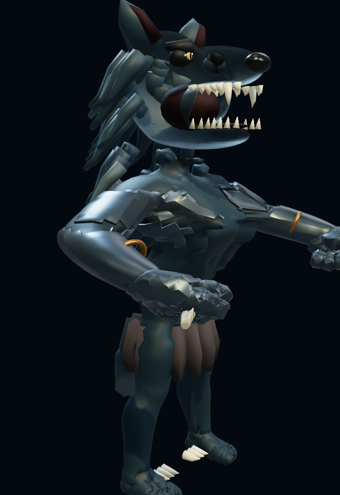
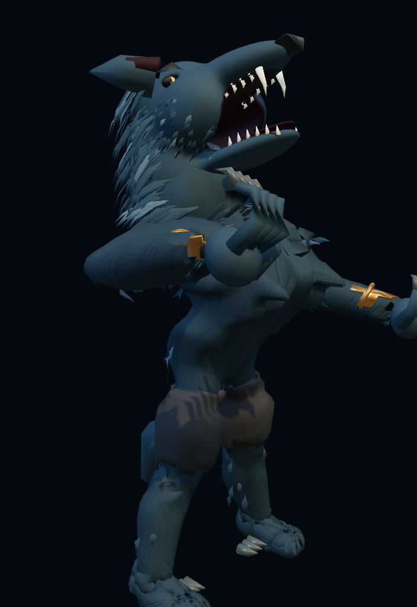

YOUR REFERENCE
Select the reference image above. It is not uploaded or published.
BEFORE THIS LOOP

LATEST ITERATION

Fixed-camera browser renders from this iteration loop. These are actual fallback-renderer screenshots. Load the supplied reference image locally to compare it alongside the model; the file stays in your browser.


Not an accepted reference match. Fine groom density, facial proportions, hand anatomy and target-GPU rendering still need work. Native WebGPU and 60 FPS acceptance remain unverified; these images do not establish either.
Character geometry: 122,594 → 67,033 triangles. Two character draw groups remain. The newer material has additional fur texture samples, so fewer triangles alone cannot prove a faster GPU frame.